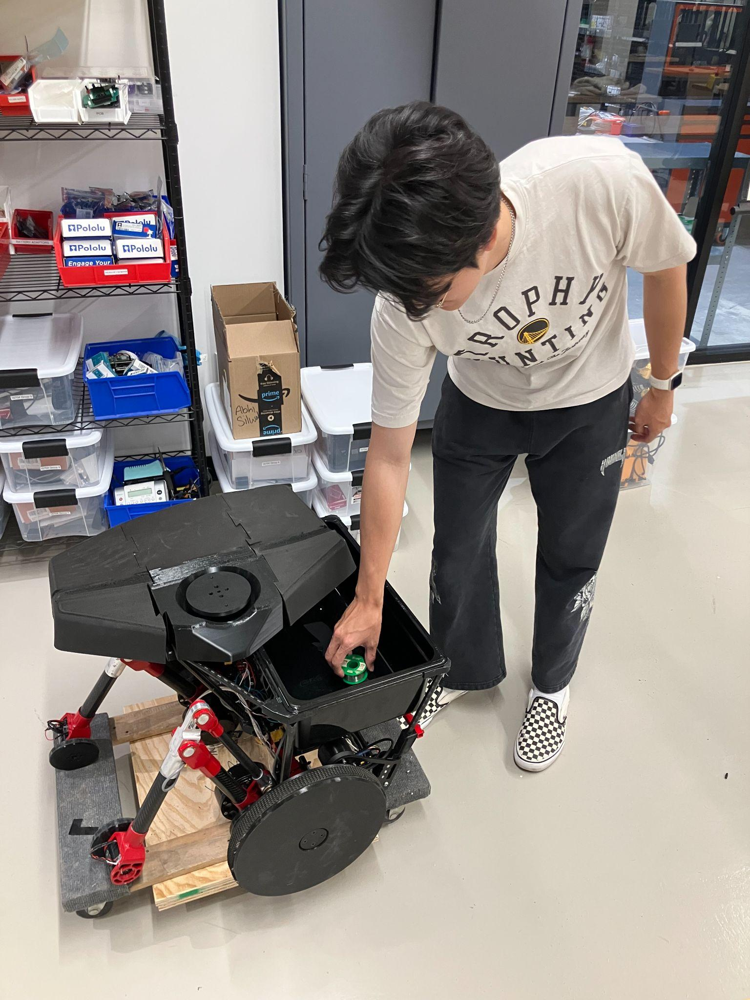

Problem Definition
Problem Statement
On a typical university campus, students travel between buildings and classrooms carrying backpacks with bulky and heavy items, which can lead to undue strain on muscles and joints. Continuous backpack use may cause back, neck, and shoulder pain, along with extra pressure at the spine, knees, and hips. Over time, the use of a backpack can cause discomfort and reduces efficiency when travelling across campus.
We aim to develop a solution that relieves students of the physical burden of carrying a backpack on a university campus.

User accessing the robot's cargo compartment.
Motivation
A robotic backpack that follows its user addresses the issue of physical strain on students from carrying a heavy load. It improves accessibility by supporting mobility-impaired users who may have difficulty carrying a traditional backpack.
On a university campus where students frequently transition between multiple buildings, a robotic solution is particularly well-suited because it can autonomously follow the user and adapt to dynamic environments. By focusing on a school campus, the robot addresses the challenge of adapting to obstacles in both indoor and outdoor terrain.
The Piaggio Gita is an autonomous cargo robot that uses computer vision to follow a user while carrying modest payloads. However, it is limited by its wheeled design and only supports functionality on smooth, even terrain. Extending its capability to seamlessly transition between indoor and outdoor environments while navigating complex terrain results in a well-rounded product that can easily integrate into a campus environment.
Supports mobility-impaired users who have difficulty carrying a traditional backpack across a spread-out campus.
Campus environments include smooth hallways, cracked sidewalks, curbs, and elevator thresholds — a challenge for purely wheeled solutions like the Piaggio Gita.
The robot adapts to the user's real-time movements and schedule, allowing it to integrate naturally into their daily routine without constant intervention.
Assumptions
These assumptions define the boundaries of our problem space and scope our requirements accordingly.
Rough terrain does NOT include:
Rough terrain MAY include:
Walking speed assumed to be approximately 3 miles per hour based on published averages.
Use Cases
These use cases define how the robot behaves in realistic operating conditions and guide the requirements derivation.
While following the user on smooth terrain, the robot encounters cracked or uneven ground. It evaluates terrain roughness and deploys its legs to assist traversal if necessary. Continues following user in the appropriate configuration.
The user unlocks the secure storage area. The robot transitions to a stable configuration. The locking mechanism opens, the user adds or removes items, and the compartment is locked again before the robot resumes movement.
An obstacle, glare, or sensor issue causes the robot to lose track of the user. It initiates an autonomous search pattern. If the user is reacquired within 10 seconds, it resumes following. Otherwise it halts, signals a failure, and switches to tele-op.
The user activates tele-op mode and controls the robot directly via a remote interface. Autonomous commands have no effect. If connection is lost, the robot ceases all motion. The user can switch back to autonomous at any time.
The robot's wheels get stuck on an obstacle that didn't register as rough terrain. It detects the stall via odometry, enters rough-terrain mode to recover. If recovery fails, it enters a fatal-error state, halts, and waits for user intervention.
The robot identifies and tracks the user, maintains a specified following distance, scans the environment for obstacles, and continuously updates its path to follow the user safely around stationary and moving obstacles.